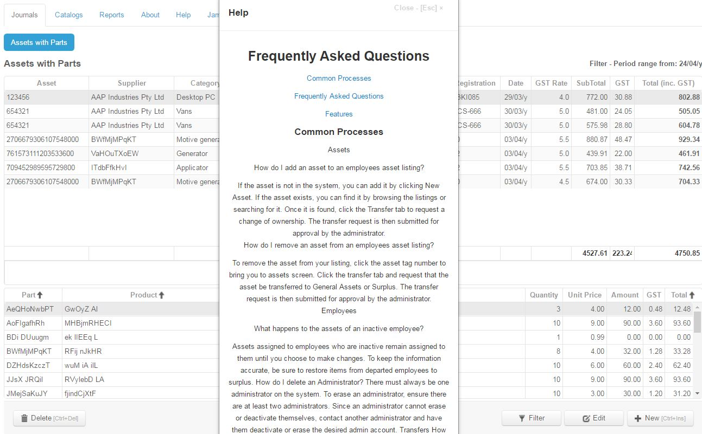
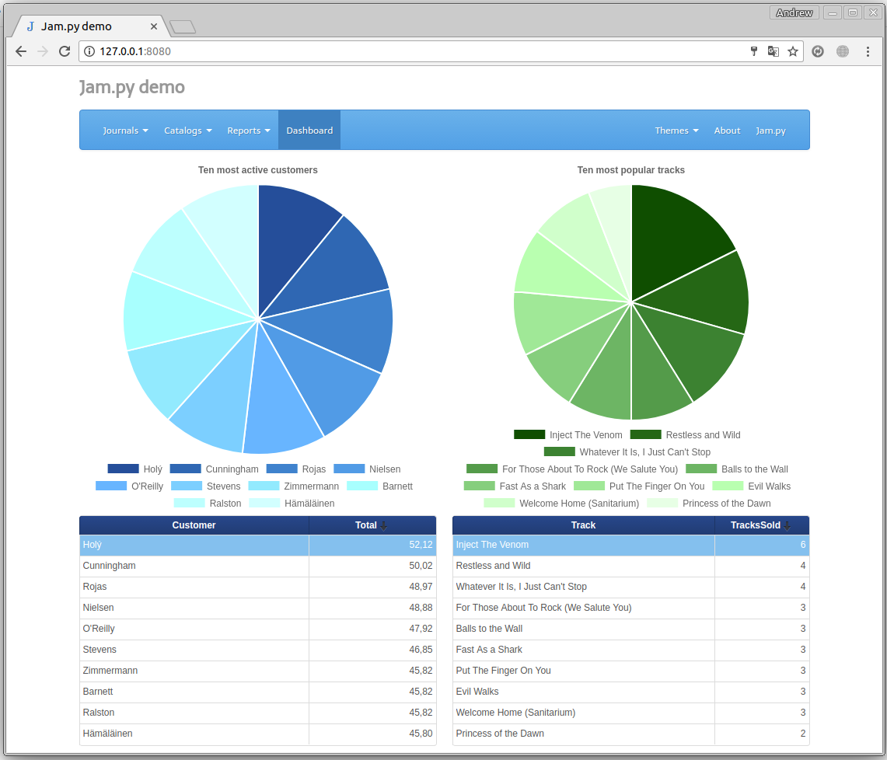

Con Jam.py puedes crear, personalizar, probar y compartir aplicaciones impresionantes, rápidas y orientadas a eventos para SQLite, Oracle, MySQL, PostgreSQL y Firebird. Todo eso para gratis y no hay bloqueo de proveedores!

Con Jam.py puedes crear, personalizar, probar y compartir aplicaciones impresionantes, rápidas y orientadas a eventos para SQLite, Oracle, MySQL, PostgreSQL y Firebird. Todo eso para gratis y no hay bloqueo de proveedores!
Marco orientado a objetos, basado en eventos con estructura jerárquica.
Tratamiento de datos de tabla de base de datos potente pero fácil en el servidor y el cliente.
Forma segura de administrar cuentas de usuario y contraseñas.
Con la aplicación Jam.py Bases de datos Builder, puede resolver un problema comercial específico. Fuera de la caja Jam es proporcionando: acceso rápido a bases de datos subyacentes, seguridad, autenticación, validación, calendarios, multi idiomas, todo eso con mínimo de codificación necesaria. Siendo un framework Python, es extensible y flexible.
Con Jam.py, sólo necesitas el navegador! Su productividad será el cohete de cielo a medida que cavar en el marco utilizando nuestro editor de código. Realice cambios en el editor, actualice la página y vea Los resultados.

Redes de eventos
Las redes activadas por eventos le permiten manipular fácilmente datos simplemente haciendo clic en una celda y editando su valor.
jsCharts o cualquier biblioteca de gráficos
Bloqueado con una capacidad de gráficos de proveedores? Nunca más. Utilizar bibliotecas gratuitas como jsChart, y el resto.
Diseñado con la simplicidad en la mente, basado en la fundación fuerte de Delphi. No hay widgets web, no hay dependencias de tales. Sin embargo, puede utilizar CSS o JS y lograr resultados con Jam. En organizaciones pequeñas y medianas sin desarrolladores, uno puede construir una aplicación basada en requisitos en ningún momento con sin prisas de marcos declarativos.
Sólo hay unos pocos archivos que desplegar en el entorno de desarrollo / producción. Comparando con otros con mega despliegue o dependencias de bases de datos, Jam es un ligero como una pluma.
Para ayudarle, incluimos una demostración de facturación completa en la que puede basar su próxima aplicación.
Mediante el uso de Jam.py Application Builder, finalmente liberará a su organización del bloqueo del proveedor. Incluso más, con las utilidades disponibles libremente, usted puede mover su costoso base de datos a la fuente abierta que le deja con mover sólo el BI a Python. Oracle Forms por ejemplo, se puede mover en ningún momento, el Jam.py framework tiene eventos para cubrir la lógica de formularios. Y por supuesto tú tener el código fuente, que puede ser acomodado para su organización necesariamente.